正君
之教

依据国家《中学德育大纲》《中小学文明礼仪》《中国学生素养2016》《中小学德育工作指南》（2017）和深圳中学德育目标要求，结合8班学生年龄特点和班级定位，制定8班初一阶段德育发展方向，以此开展和评估班级工作，以期能够增进家校理解与合作，为培养具有现代特质的中学生提供发展性支持。
（一）价值观教育：关于核心价值观的体系构建是一个意义深远的行动，关乎孩子的生命状态和民族的未来。本学期将着重构建的是：“尊重”，主要内容是：尊重自己、尊重他人、尊重责任、尊重优秀。
（二）学习小组： 班级是一个学习团队，由仁义礼智信五个学习小组构成，初一第一阶段要发挥好小组合力，在竞争中共同进步。
（三）学科管理： 把各学科的管理分为四个学段，不同学段进行考核;针对性要强，让每一个学生都在实现个人目标的征途上奔跑。
（四）综合能力 ：在沟通能力、思维能力、审美能力、表达能力、动手能力、协作能力等方面呈现出不一般的素质。
（五）文化生活： 家长群体将发挥主导作用和资源优势，举行与成长有关的互动活动，深化学习的情趣。同时还合力打造亲子文化。
当我们把老师、同学、家长和社会四个主体融合在一起时，我们会发现这是一种十分美好的机缘，我们可以创造更有意思的生存状态。只要我们都充分尊重，十分珍惜，万分努力，就能争得百分的满意。
目标：立德树人，全面发展
★初步培养全球视野、家国情怀、共情意识
★深圳中学学生特质五维度：荣誉、责任、习惯、思维、卓越
●培养尊重自己、尊重他人、尊重责任、尊重优秀之品德
●培养组建团队、制定队规、依规办事、协调关系、解决问题的能力
●尊敬父母师长，遵守公共文明礼仪，关注细节，感受真实情义，学会合理表达
●适应初一过渡阶段心理变化，情绪与行为的自控能力有所发展
模式：学习型团队
口号：奋斗点亮自己 光芒照亮他人
结构：班主任----班委会----学习小组-----家长群
班委会
班长：艺 副班长：彤
学习委员：柯 体育委员：豪 宣传委员：悦
文娱委员：沛 生活委员：绚 纪律委员：承
电教管理员：圳
静校管理员：悦（协理绚、监督承）、彩（自习室）、江（图书馆）
卫生委员：民（总负责）、骏 +承+灏（全天+傍晚）
学习小组：仁（媛）、义（昕）、礼（欧）、智（焓）、信（柯）
家委会——
会长：黎女士（悦然妈）
学习部：宇杰妈，悦然妈，容达妈、扬柯妈
文体部：瑾禹妈，静怡妈，毓焓妈
宣传部：婧语妈，哲宇妈
财务部：绚儿妈，宝仪妈
生涯部：华慈妈，谢彤妈，元曦妈
家长义工组
：
仁（瑾禹妈 悦然妈 华慈妈）
义（宝仪妈 静怡妈）礼（绚儿妈 宇杰妈）智（婧语妈 毓焓妈 谢彤妈）信 （容达妈 哲宇妈 扬柯妈）
1、散学礼
7月9日下午3：00-4：30
班级风采展示：
年级评优表彰：
年级卓越奖：付、柯、媛
班级卓越奖：付
学科精英奖：柯（道法）、付 曹 云 艺（生物）、付 艺（地理）、柯（以下体育）、骏、曹、欧、曦、禹、昶、江、焓、凯、淳、桁、丘
自我超越奖：邓
三好：曹、骏、昶、柯、江
优干：艺、民、悦
创新：欧、圳、曦、承
公益：权、彩、灏、培
特长：玥、慈、语、淳
超越：昕、绚、禹、凯
好习惯：付、云、焓、位
规范：彤、冰、沛、白、丘、哲、宝、达、良、轩、琮
2、期末考试
7月5日-6日，期末考试。
前十名：付、柯、曹、骏、云、艺、焓、欧、昶、玥
小组均分：408（仁） 393（礼） 391（义） 380（信） 362（智）
小组头名：付（仁）、骏（义）、欧（礼）、艺（智）、柯（信）
单科情况（1-12前200）：
语文：曹（111.5）、付、焓、云、悦、艺、玥、民、欧、柯、李孟、语、江、毛、骏、位、凯
数学：欧（98）、付、承、柯、昶、焓、玥、云、位
英语：曹（89.5）、江、语、付、云、艺、玥、骏、昶、曦、悦、位、慈、圳、柯、灏、民、焓
历史：付（65）、柯、骏、艺、白、郑、慈、焓、昶、曹、云、圳、承、曦、语、淳、灏、轩、良、凯
道法：柯（50）、骏、付、民、玥、曹、云、艺、圳、位、庞、欧、悦、承、宝、曦、慈
体育：柯、骏、曹、欧、曦、禹、昶、江、焓、凯、淳、桁、丘（以上100）、宝、语、绚、茹
地理：付（98）、艺（98）、柯、圳、昕、民、慈、曹、哲、白、焓、云、承、曦、良、铠、骏、位、玥、涵、昶、淳、茹、欧
生物：曹（100）、付（100）、云（100）、艺（100）、位、圳、柯、昕、慈、焓、玥、民、曦、承、哲、骏、悦、欧
3、班委调整
根据前期评优投票，保留优干，纳入三好，个别谈话，初步确定初二班委名单如下：
班长：艺 副班长：曹
学习委员：柯 体育委员：骏、慈、江 宣传委员：悦
文娱委员：玥 生活委员：绚 纪律委员：承
电教管理员：圳
静校管理员：江（协理绚、监督承）、彩（自习室）、云（图书馆）
卫生委员：民（总负责）、骏 +承+灏（全天+傍晚）
学习小组：仁（付）、义（昕）、礼（欧）、智（焓）、信（柯）
4、综合评价
7月8日，学生自评、亲子共评，班主任评，顺利完成。
5、安全教育
6、班主任强调
要把安全放在第一位
1、期末考前教育
7月2日午读时间，考前诚信教育。
2、义务劳动（第15次）
D405、D204、D605
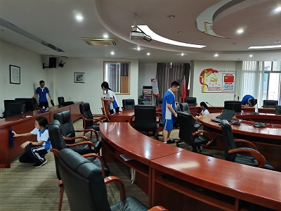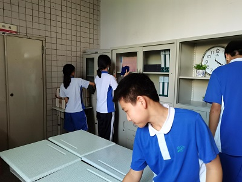
3、党史学习教育进家庭
6月30日，家委发布党史教育进家庭活动公众号（第8期）——百年峥嵘，与党同行
4、布置期末考场
5、关注学生考前心理健康
家委生涯部门负责
6、班主任强调
考前注意安全
6月25-28日，中考会考，放假四天。
2、年级广播会
6月21日晨，年级阶段总结+学生自评
3、评优投票
周四下午举行了期末评优投票，4项票数相加，超过30票的有：曹、艺、骏、欧、付、林、郑、悦、柯、江 。
4、 加强午休管理
再责4人回家午休
5、义务劳动（第14次）
D605，雍睦堂门口、雍睦堂会场内
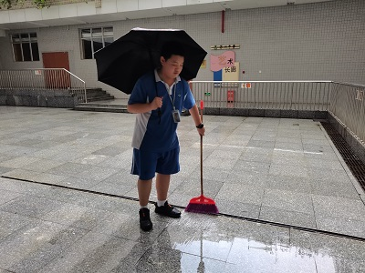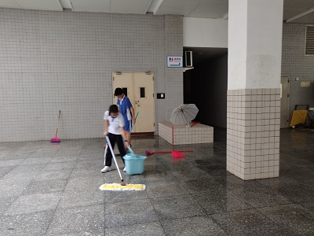
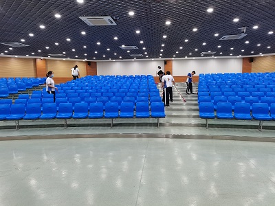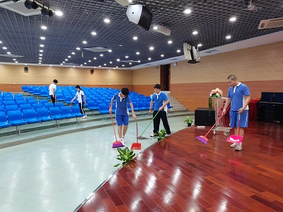
6、红暴停课
6月22日早上，遇红暴，停课一天。
7、防疫工作
共同居住人疫苗接种情况。（家委完成）
8、班主任强调
加强自主学习（因为放假较多）
1、6月14日端午节放假一天
2、体育期末考试
6月18日下午第三节课，体育200米考试。
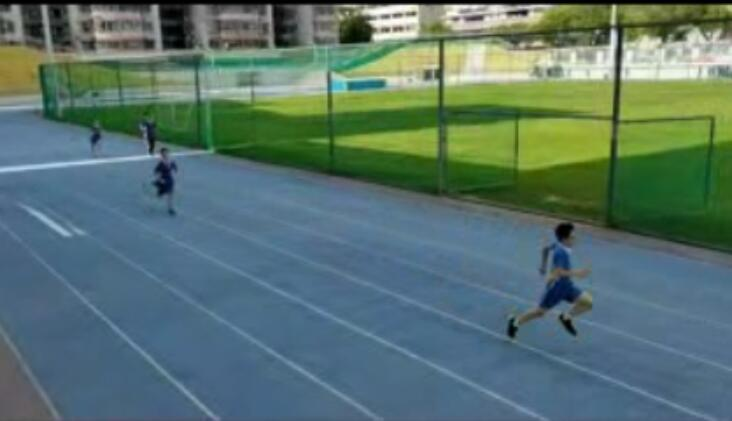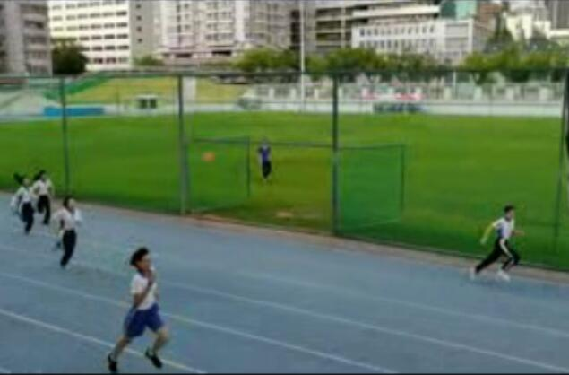
3、义务劳动（第13次）
D204
4、家委活动
心理健康教育策划中
党史教育进家庭活动进行中
5、诫勉谈话
加强午休管理
建议3人回家午休
6、调整备考座位表
突出榜样效应，力争整体进步
7、学科
非中考科目开始期末考查
中考科目准备提交平时成绩
1、6月7-9日，高考放假三天
2、优生推荐
按学校评优通知，学生自我推荐。我班玥、柯、彤三位同学参评。
3、实习廖老师汇报课
6月12日，实习廖老师在我班上汇报课《望岳》。
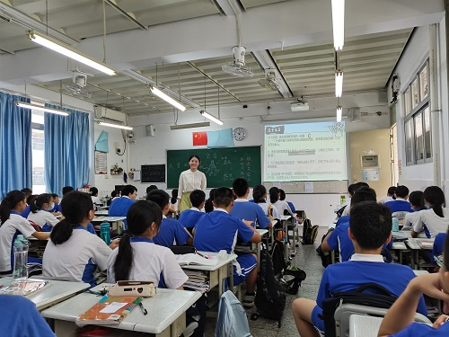
4、处理严重违纪事件
12日下午放学后，D605。
部分班委、违纪者、证明人。
违纪者自述、证明人补充，班委记录并提出处理意见。
形成纪要文件。
通报有关家长。
5、义务劳动（第12次）
D204，D605
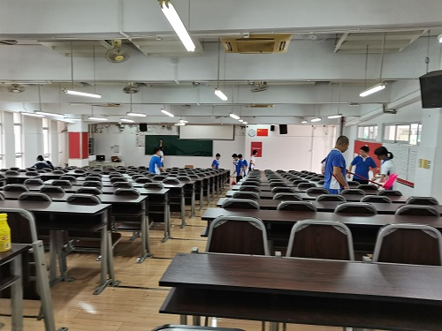
6、核酸检测
学生和共同居住人登记造册（家委负责完成）
7、班主任强调
遵守学习纪律
1、六一儿童节
放假一天
2、主题班会
5月31日晨，实习廖老师主题班会汇报课——缅怀袁隆平院士
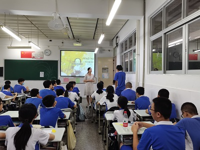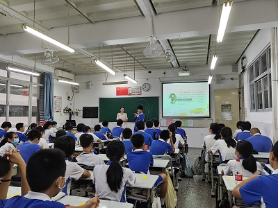
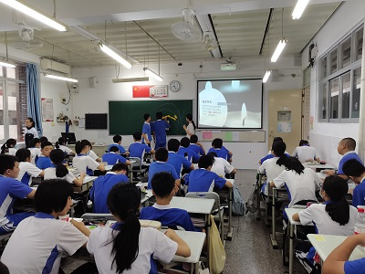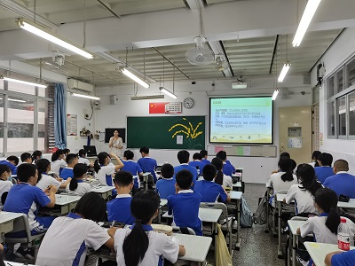
3、网络安全教育
本周由班长艺同学主讲。
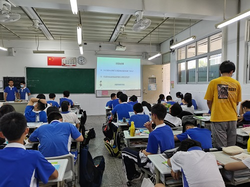
4、
义务劳动（第11次）
D605
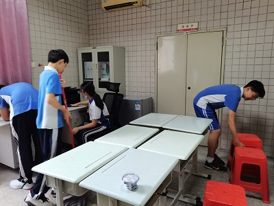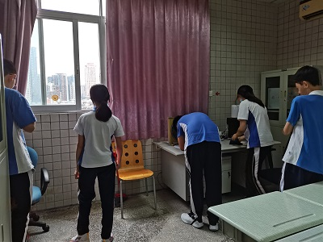
5、
疫情防控升级
6、约谈诫勉升级
儿童节后，升级谈话流程，重要谈话须填写诫勉记录单，引导学生自述、自省、自律，并进行必要的跟踪反馈。
7、学生评教启动
8、班主任强调
六月要加强学科复习和考试训练
1、主题班会
5月21日晨，廖老师试上班会课，年级统一主题：默哀仪式+心理健康
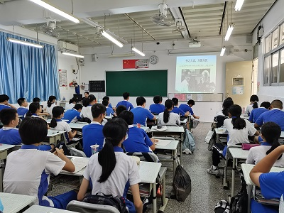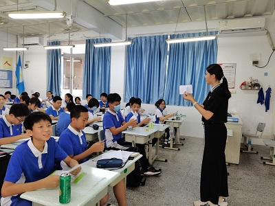
2、年级足球比赛
5月21日放学，第一场足球赛对阵6班，最终双方1：1握手言和。
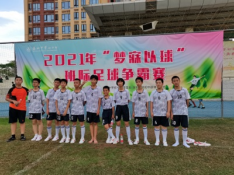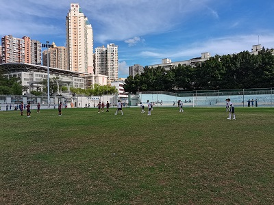
3、班级艺术展演
5月28日放学，学校大门口，力行楼前，班级艺术特长展示。
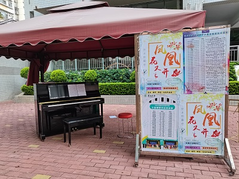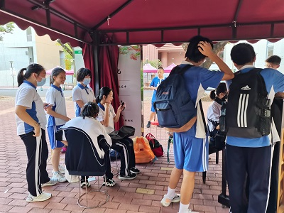
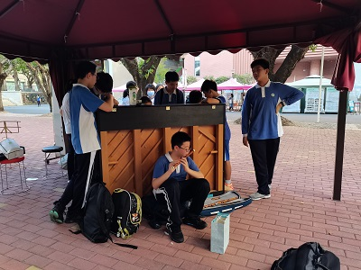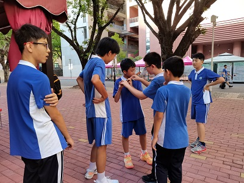
4、六一节目排练
周四下午放学节目组排练，周五下午彩排
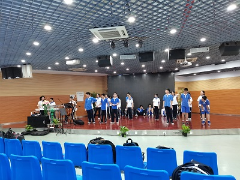
5、电子手表管理
统一协管箱启用，禹同学管钥匙
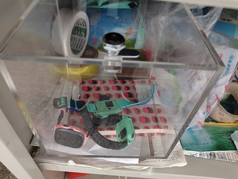
6、义务劳动（第10次）
D605
7、约谈诫勉
根据红本通报，约谈个别同学
8、班主任强调
避免言语伤人
9、扩大家委
增设生涯资讯部，家委增加3人。
5月17日，全校升旗。我班被评为“绿色班级”。
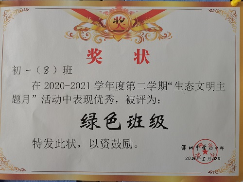
2、实习廖老师正式与大家见面
5月17日班会课上，廖老师作自我介绍。班级赠“鱼戏荷叶间”手绘书签一支。
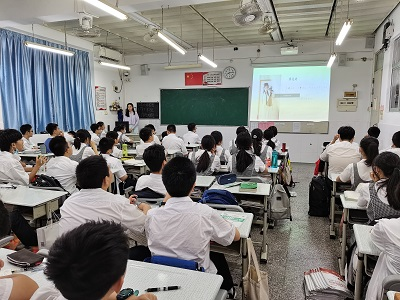 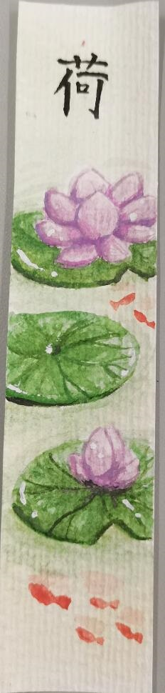
3、育新学校安全教育
5月19日，年级在深圳市育新学校组织安全教育活动。
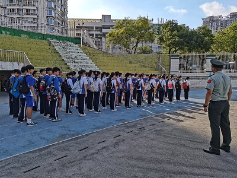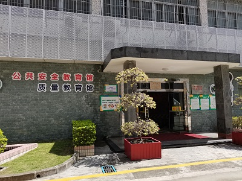
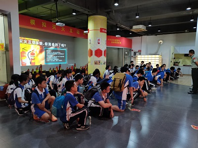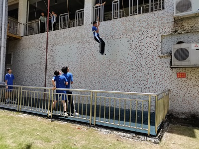
4、六一节目排练
5月20日中午，先锋剧场。
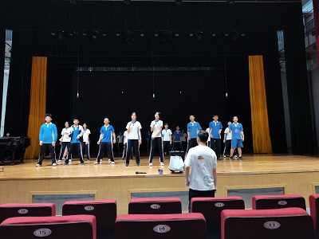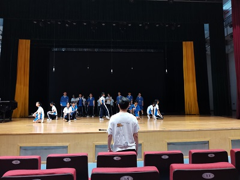
5、足球比赛
正式报名、选购队服、发放告知书。
6、义务劳动（第9次）
D204
7、家委代表会议
5月17日下午3点至6点半，家委黎会长和三位委员与班主任一起整理、研究家长们关于班级建设方面的各种意见和建议。
归纳为十个重要问题；决定扩大家委。
8、电子手表管理
经学生自选，由家长远程管控手表禁用时段。
5月21日起执行
9、课堂记录本
每天课堂记录发家长和班主任，处置升级。
10、班主任强调
交友一定要谨慎，多交益友。
5月14日晚7点至9点40分，本学期中段家长会。四小学科广播宣讲学法，分层学科分班宣讲。家委会会长介绍家委工作，班主任进行学科与德育工作总结。
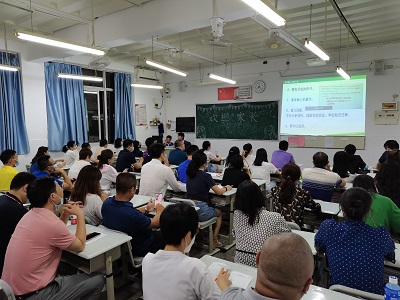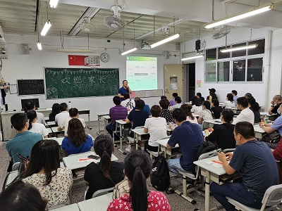
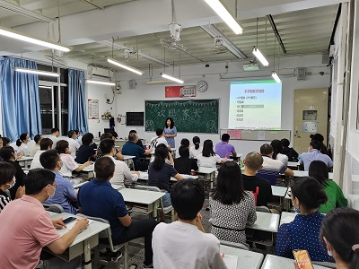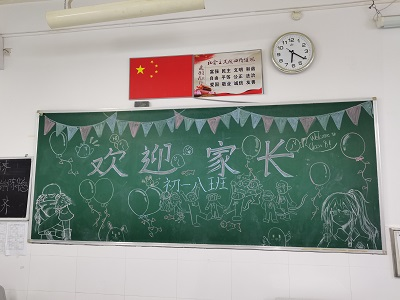
2、主题班会
5月10日班会课，主题：期中考试之后
3、家务劳动教育
家委发布公众号（第7期）：我爱劳动，劳动使我快乐！
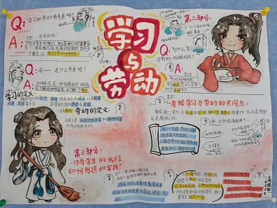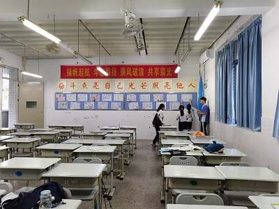
4、六一节目排练
在娱委沛、语、彩、权等同学的带领下，合唱、舞蹈、乐器三个小组都在利用中午时间进行排练。
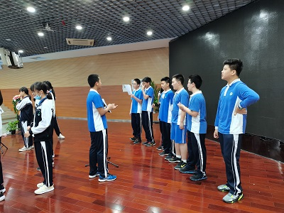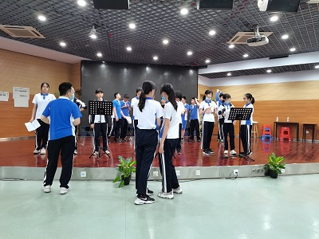
5、义务劳动（第8次）
D605+D204
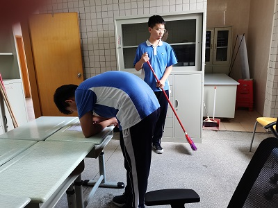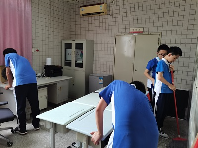
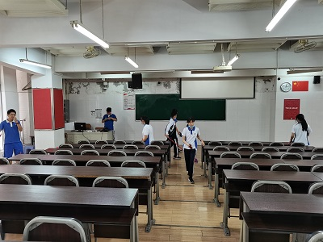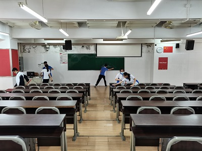
6、足球比赛准备
年级发布最新足球比赛通知，淳、李孟等同学按通知进行准备。
7、安全教育活动报名
年级安全教育活动准备中
8、 班主任强调
要始终把安全放在第一位。
5月1日至5日放假
2、期中成绩
前十名：付、曹、艺、柯、骏、玥、圳、江、位、欧
进步100以上：玥、欧、宝、悦、位、庞、冰
进步50~100：禹、轩、圳、宸、茹、江、付、航
小组均分：399（仁） 394（礼） 384（义） 368（信） 353（智）
小组头名：付（仁）、骏（义）、圳（礼）、艺（智）、柯（信）
单科情况（前200）：
语文：悦（110）、艺、付、江、曹、玥、骏、慈、语、柯、毛、民、哲、禹、云、李孟、昶、宝、位、欧、冰、曦
数学：欧（100）、曦、圳、位、付、慈、云、昶、曹、昕、骏、承、柯
英语：江（93.5）、付、曹、骏、圳、艺、位、玥、语、悦、云、昶、灏、曦、柯、淳
历史：曹（100）、张、付、艺、民、玥、圳、焓、欧、白、位、云、淳、哲、骏、慈、江、昕、茹
道法：付（98）、骏（98）、艺、玥、曹、柯、欧、江、悦、焓、慈、
承、绚、民、曦、云、昶、宸、哲、位、茹、语、毛
地理：付（100）、艺（100）、民（100）、曹、承、柯、位、玥、淳、圳、庞、慈、曦、昕、哲、毛、白
生物：曹（100）、慈（100）、付、悦、艺、柯、圳、昶、玥、江、欧、焓、淳、曦、民、昕、骏
3、年级期中表彰
5月8日，下午4点，先锋剧场。年级期中考试表彰大会。
优异奖：付、曹、艺、柯
单科奖：欧、曹、付、艺、民、慈
超越奖：玥、欧、宝、悦
玥发表演讲
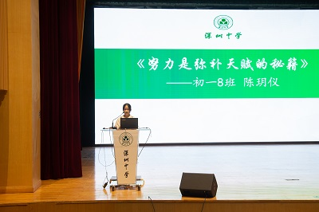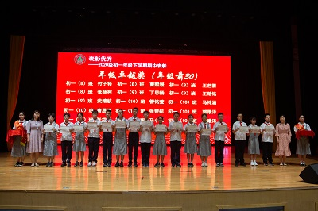
4、六一节目排练启动
5
、座位表
6、义务劳动（第7次）
D605和D204。
26-27日两天，期中考试。
2 、义务劳动（第6次）
4月30日中午，D605班主任工作室
3、座位新规——“留学”
4、节目组筹备
娱委沛与语、悦、玥等策划新节目
5、班主任强调
三思而后行（天、地、人）
1、年级广播会
4月19日晨，年级广播会，内容包括绿色班级创建总结，1-8周常规通报，存在的问题等。
2、考前诚信教育
4月25日周日补课，早晨教学处组织广播会，进行诚信教育。
3、期中考前复习
4、整顿零食乱象
本周学生购买零食出现些许乱象，有跟风扩大之虞。学生处、年级、班级和家长全力配合，遏止了这一现象。
5、体育课上违规抛掷篮球事件
体育课有7位同学违规抛掷篮球，影响初三体育中考训练，特对这些同学提出批评。
6、周日补课
因五一小长假，统一补课。
7、体检
4月21日，学校组织体检。
班主任强调：
考前安全
1、主题班会
4月12日晨，主题班会。
考前心理辅导与方法指导。
2、学校食堂义工
本周部分同学参加和园和静园食堂义工。
3、足球训练
男女生足球训练开始。
4、班委会议
4月16日下午，班长组织全体班委会议，主要议题有：红本记录问题；体育课的问题；非中考科目课堂问题；大家讨论积极，也制定了方案。
5、体检通知
周五早上收回执
6、换座位
1、清明节放假（周一）
2、商议足球队事宜
因学校将在本期组织足球活动，淳、李孟等开始策划组建球队，并展开训练。
3、篮球友谊赛
4月9日下午，力行楼篮球场。我班与9班举行了一场篮球赛，分上下半场，共30分钟。我班21：14获胜。裁判武老师。上场队员：豪、桁、骏、承、轩、弈。
4、义务劳动（第5次）
4月9日中午，D204。

5、线上推荐学习
国家中小学网络云平台党史学习：从小学党史，永远跟党走。
6、班主任强调
适当的时候，召开线上小组家庭会议
1、主题班会
3月29日晨，主题班会，“节能低碳，生态环保”。
2.三月单元测试汇总通报：
语数英史道五科总分420，班均分315，最低分217，最高分395，仁组均分334，义组322，礼组317，信组309，智组289。
340分以上有：曹、付、骏、艺、柯、民、昶、云、慈、圳、江、
玥、焓、语、承、位、轩、淳、曦。
3.体育测试
3月31日，体育课，100米测试。
4、家长来访
4月1日下午，教工之家。按预约接待一位家长。
5、义务劳动（第4次）
4月2日中午，D204。

6、完成环保主题板报
7、班主任强调
4月2日放学时，班主任强调“不造谣”“不信谣”“不传谣”。
3月22日晨，先锋剧场，全校升旗集会，主题是环保。我班毛同学作主题发言：保护环境，从我做起。
2、接待来访家长
3月23日下午，图书馆，接待来访家长，交流孩子在校与在家的情况。
3、配合科任老师管理课堂纪律
重点关注非中考科目课堂情况，3月22日和3月26日分别对课堂违纪同学进行了训诫。
4、义务劳动（第3次）
3月26日中午，D204。
5、倡导安装国家反诈骗App
全班安装
6、实习老师家访
3月25日晚，实习杨老师家访。
7、班主任强调
3月26日放学时，班主任强调“不串”与“守法”两条。
3月15日晨，年级会议之后，由实习杨老师主持校外学雷锋总结会，两个活动小组的组长发言。
2、准备全校升旗仪式上的讲话
毛、江、圳、庞准备稿子和PPT，悦、玥参与修改。
3、图书馆静校
4、后墙新样
5、本周发出两张家校交流条
6、多学科进行单元测试
7、调整座位（5-6周）
1、主题班会：学习雷锋好榜样/欢迎实习杨静雯老师
3月8日晨，按学校德育计划，组织了学习雷锋动员会，了解了雷锋的童年，主要事迹，聆听了有关雷锋的歌曲。并安排实习杨老师与同学们正式见面。
2、课后延时服务（自主学习）
周一、三、五三个下午，课后延时服务，学校安排老师记考勤，实习杨老师下班为同学讲题。
3、班委会议
自从本周起实行班长通报课堂记录后，为提升班干部的执法效能，特于3月12日（周五）放学时间在D204召开了班委会（班委+组长），会议由班长艺同学主持，围绕班干部自身的“公平性、主动性、自律性”三个方面展开批评与自我批评。
4、D204自习室义务劳动（第2次）
3月12日（周五）中午，部分同学义务打扫。
5、家委代表来校议事
3月11日下午3点30，图书馆教研室，家委代表来校商议组织学习雷锋主题活动方案。会议由实习杨老师先汇报前日班干部会议要点，然后与家委代表根据情况敲定基本方案。
6、更新后墙宣传板
3月11日下午放学时间，家委代表、宣传委员和部分同学一起更换教室后墙宣传板。
7、周末校外学习雷锋主题活动
3月13、14日两天，全班分两组，在洪湖公园举行了学习雷锋主题力行活动：捡拾垃圾，垃圾分类知识宣传，雷锋知识问卷与学雷锋访谈。
详情见班级公众号第6期
——学习雷锋主题力行活动

1、年级会议：
3月1日，班会课，年级分层教学说明。后班级播放视频，主题：“有挫折也有希望”（贾玲小品）
2、分层教学启动
7、8两班数学和英语课堂教学时重组，部分同学走班，作业有区分。
3、课后延时服务申报
本周向家长发起有关课后延时服务的调查，并指导学生根据个人情况进行申报
4、网络素养课程培训
学生处组织网络素养课程培训，我班下列同学参加：彤、慈、艺、云、曹、冰、昶
5、D204义务劳动（第1次）
3月5日，部分同学报名参加D204义务清洁活动
6、班级公众号第5期——春天在哪里
7、调整座位（3-4周）
1、开学典礼
2月22日下午4点45分，力行楼，全校开学典礼。
2、开学考
周二、周三下午组织了数学和英语的开学测试
3、静校
共46人静校，6人在图书馆，8人在自习室，其余在教室。江管理，绚协理，承监督。
4、检查寒假作业
5、家委会调整
罗会长因个人工作原因不再担任会长一职，由悦然妈妈接任。
6、家校沟通条
本周给一位同学发放沟通条
7、重考
2月27日，部分同学参加重考。
1、报到
2月21日上午，寒假归来，开心报到。
2、交寒假作业
3、领书
4、大扫除
5、制定新学期目标
6、班级公众号第4期——这个春节我们一起欢度
初一：自在打开 且乐且长
czjszsz@qq.com